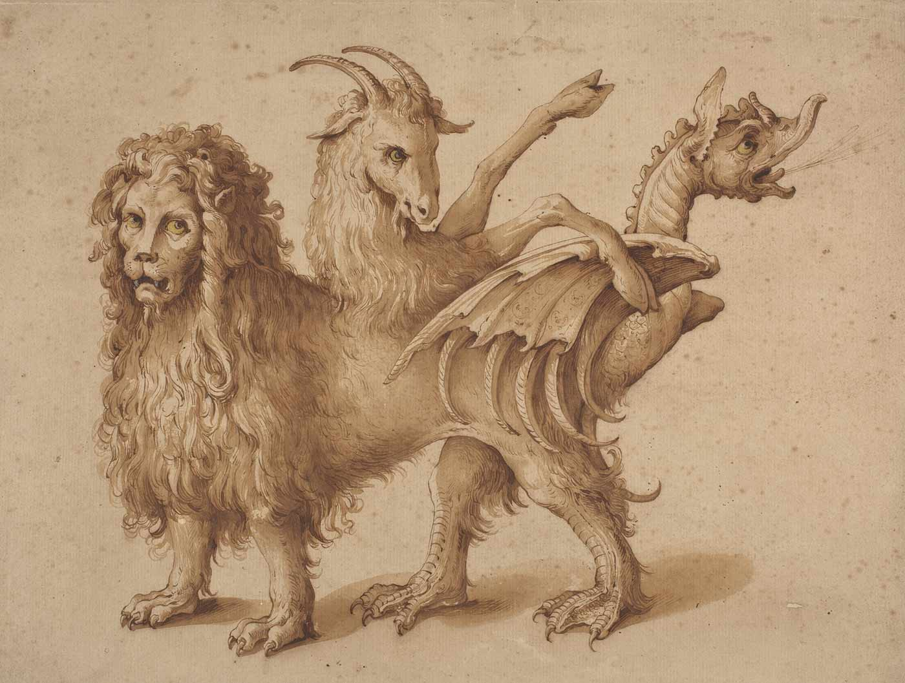

Chimeras
What is a Chimera?
A chimera is a hybrid creature made up of the body parts of different animals.
The term originates in ancient Greek mythology. The Chimera was a fire-breathing monster with a lion's head, a goat's body, and a serpent's tail.
Today, the word chimera casually refers to any implausible or fantasy hybrid animal. Mythical chimeras appear in numerous human cultures throughout the ages. Some popular chimeras include gargoyles, griffins, centaurs, harpies, and mermaids.
In science, chimera is used to describe a human engineered hybrid organism, or the result of a genetic anomaly.